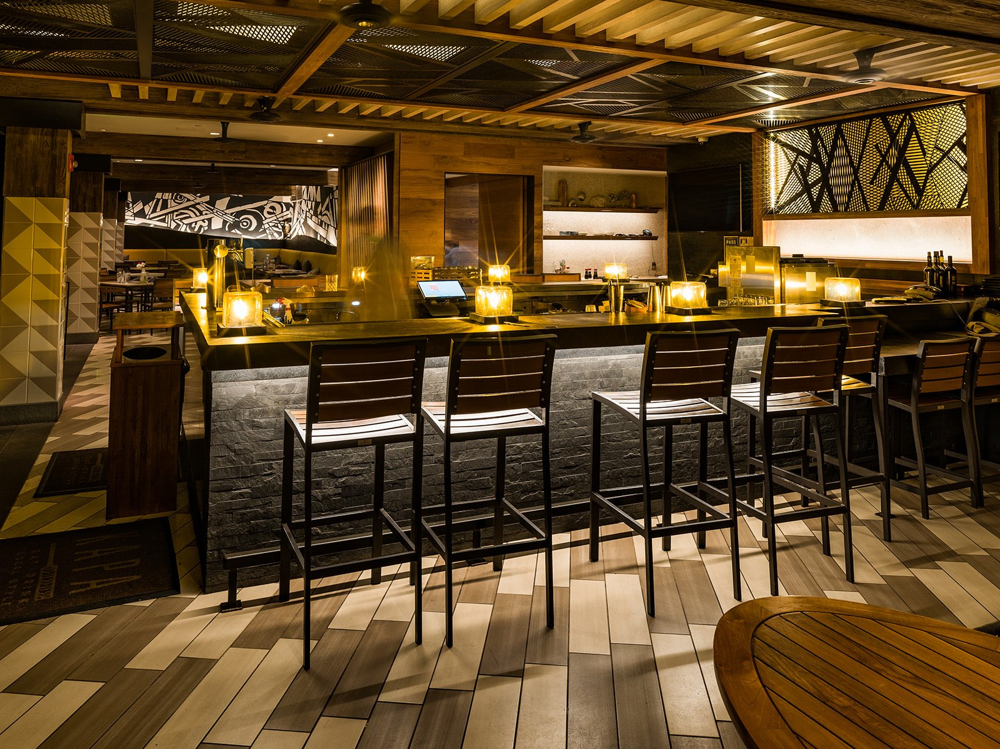

Where to eat after your sunset session in Wailea.
Once the sun dips below the horizon and your photo session wraps up, you will be ready for a great meal. Here is our personal local guide to the best spots in Wailea and Kihei.

For engagements, anniversaries & special evenings.
Whether you're celebrating an engagement, a vow renewal, or an anniversary trip, ending your evening with exceptional food and ocean views makes the night complete.
Four Seasons Wailea (Ferraro's, Spago & DUO)
Our top recommendation for engagements, vow renewals, and anniversary evenings. Exceptional oceanfront dining across Ferraro’s, Spago, and DUO.
Humble Market Kitchin By Roy Yamaguchi
Hawaiian-inspired fare made with fresh ingredients at the Wailea Beach Resort.
Morimoto Maui
Located at the Andaz Maui right where our Mokapu Beach sessions take place. World-class sushi overlooking the ocean.

Casual bites, craft beer & island flavors.
If you'd prefer to kick off your shoes, grab a casual burger, or enjoy fresh fish tacos with the family, these spots offer a relaxed vibe with great quality.
Aurum in Wailea
An exceptional, dedicated gluten-free culinary experience right in Wailea.
The Pint & Cork
Located at The Shops at Wailea. Excellent burgers, craft cocktails, and a great beer selection.
Coconut's Fish Cafe
In Kihei. Famous for their legendary wild-caught fish tacos served on warm corn tortillas.
Monkeypod Kitchen
A Wailea favorite for scratch-made dishes, wood-fired pizza, and famous honey-creamed Mai Tais.
Maui Brewing Co.
Located in Kihei. Expansive outdoor grid, local brews on tap, and great pizza and burgers for large groups.

Thai, Italian, Steak & Lunch Options.
More favorites worth exploring during your stay in South Maui:
Spoon and Key
Created by Jeff Bezos' former personal chef, serving incredible fresh lunch dishes.
Lineage
At The Shops at Wailea. Vibrant family-style dishes rooted in local culinary tradition.
Nutcharee’s Authentic Thai
In Kihei. Widely considered the best Thai food on the island with incredible local fish curry.
Watch Our Personal Video Reviews
My wife and I love exploring local spots across Maui. You can watch our personal video reviews and discover more fun island activities on our YouTube playlists before your trip!
Planning dinner after your portrait session.
Do I need dinner reservations after a sunset shoot?
For fine dining spots like Four Seasons Wailea, Morimoto, Humble Market Kitchin, or Koast, we strongly recommend making reservations well in advance. For casual spots like Monkeypod, Pint & Cork, or Maui Brewing Co., walk-ins or shorter wait times are usually fine.
What time should I make my reservation for?
Sunset session end times vary by season (usually around 6:30 PM to 7:15 PM). We recommend scheduling dinner reservations at least 45 to 60 minutes after sunset so you have time to walk back to your car and refresh.